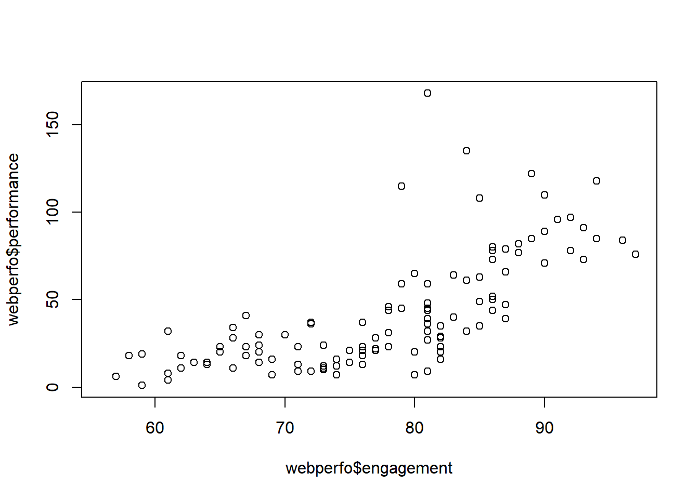
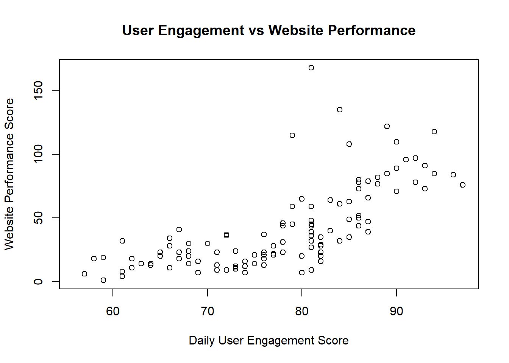
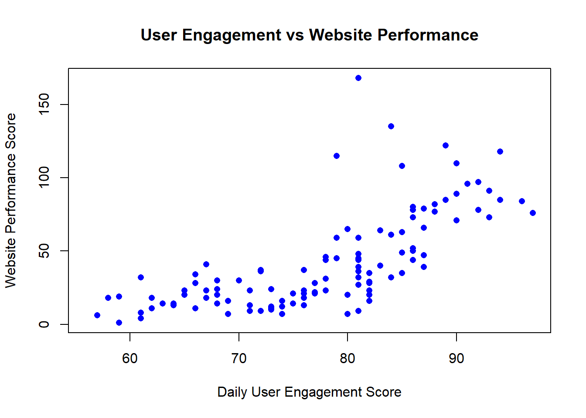
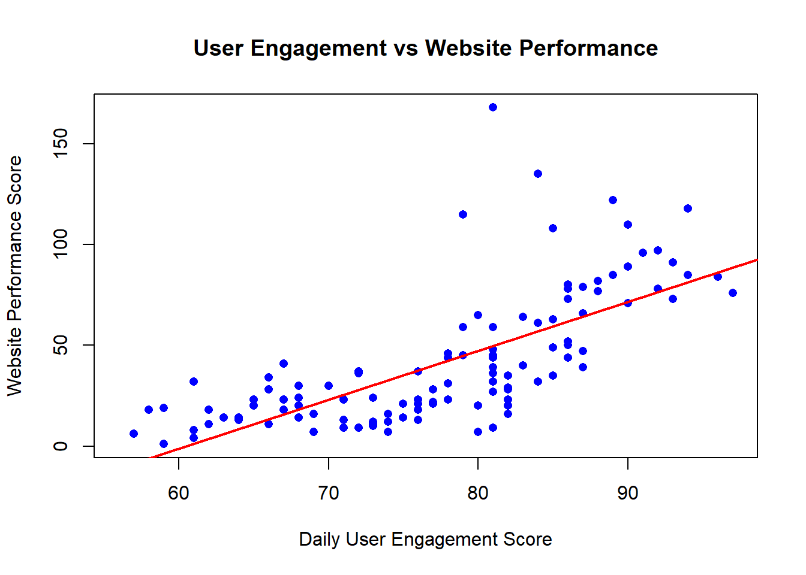

We’ve created a graph demonstrating the relationship between performance and engagement on our website. This relationship has a strong correlation (70% coefficient). 153 days of data was used to determine maxiumum scores of 168 and 97 in performance/engagement scores respectively. We also discovered 37 days of missing performance scores. Going forward we have a clear objective on how to improve website performance; Improve engagement.
Create the data set.
# Create website performance dataset with business terminology
webperfo <- data.frame(
engagement = airquality$Temp,
performance = airquality$Ozone,
server_load = airquality$Wind
)There are 3 columns of data. The headings are “engagement”, “performance”, and “server_load”. Having access to the first few rows of data instead of the entire data set makes in easier to consume visually, while still offering data in a report.
# Use head() to look at the first few rows of your data
head( webperfo )## engagement performance server_load
## 1 67 41 7.4
## 2 72 36 8.0
## 3 74 12 12.6
## 4 62 18 11.5
## 5 56 NA 14.3
## 6 66 28 14.9Performance has missing values (37). The summary tells us that engagement ranges from a value of 56 to 97 with a median/mean of 79/77 respectively.
# Use summary() to get summary statistics for all columns
summary( webperfo )## engagement performance server_load
## Min. :56.00 Min. : 1.00 Min. : 1.700
## 1st Qu.:72.00 1st Qu.: 18.00 1st Qu.: 7.400
## Median :79.00 Median : 31.50 Median : 9.700
## Mean :77.88 Mean : 42.13 Mean : 9.958
## 3rd Qu.:85.00 3rd Qu.: 63.25 3rd Qu.:11.500
## Max. :97.00 Max. :168.00 Max. :20.700
## NA's :37This is important to know in order to determine the size of the data set. The size tells us whether the results are a trend overall, and whether we need more information.
# Use nrow() to count how many days of website data you have
nrow( webperfo )## [1] 153This shows the median engagement is 81.4% of our maximum engagement. 79 median, 97 maximum.
# Use max() to find your highest daily engagement score
max( webperfo$engagement )## [1] 97We add “na.rm = TRUE” to the performance score task because performance has NA results. If we set “na.rm = FALSE” or emit entirely, the result of our task would be “NA”. Engagement does not have any NA results, so we did not need to add it to our task.
# Use max(webperfo$performance, na.rm = TRUE) to find your best website performance score
max(webperfo$performance, na.rm = TRUE)## [1] 168This graph shows a similar linear growth relationship between engagement and performance. This would be difficult to see in a business presentation without proper labels for each axis and main title. Also these data points are not easy on the eyes, and a trend line would greatly improve the visual.
# Create a basic scatter plot using plot(webperfo$engagement, webperfo$performance)
plot(webperfo$engagement, webperfo$performance)
Adding Labels lets business audience know what has been graphed/presented.
# Now improve your plot by adding a title and axis labels
plot(webperfo$engagement, webperfo$performance,
main = "User Engagement vs Website Performance",
xlab = "Daily User Engagement Score",
ylab = "Website Performance Score")
With the updated data point visuals, a linear relationship can be more easily seen between the performance and engagement scores.
# Make your plot more visually appealing by adding pch = 16, col = "blue" to your plot command
plot(webperfo$engagement, webperfo$performance,
main = "User Engagement vs Website Performance",
xlab = "Daily User Engagement Score",
ylab = "Website Performance Score",
pch = 16, col = "blue")
Adding a trend line confirms a positive relationship between performance and engagement. If engagement goes up, so does performance.
# Add a trend line to your plot using
plot(webperfo$engagement, webperfo$performance,
main = "User Engagement vs Website Performance",
xlab = "Daily User Engagement Score",
ylab = "Website Performance Score",
pch = 16, col = "blue")
abline(lm(performance ~ engagement, data = webperfo),
col = "red", lwd = 2)
The coefficient is 69.83603% (70%). This a strong correlation.
cor(webperfo$engagement, webperfo$performance, use = "complete.obs")## [1] 0.6983603When engagement is high, performance is high. This is confirmed by our strong correlation coefficient of the trend line we created using data in a plot graph. Going forward, our strategy to improve performance needs be to increasing engagement. We can improve engagement in various ways, including increasing website load speed, optimize visuals to improve readabilty, and upgrade the mobile-phone friendliness. We also need to investigate why 37 days of performance scores are missing.